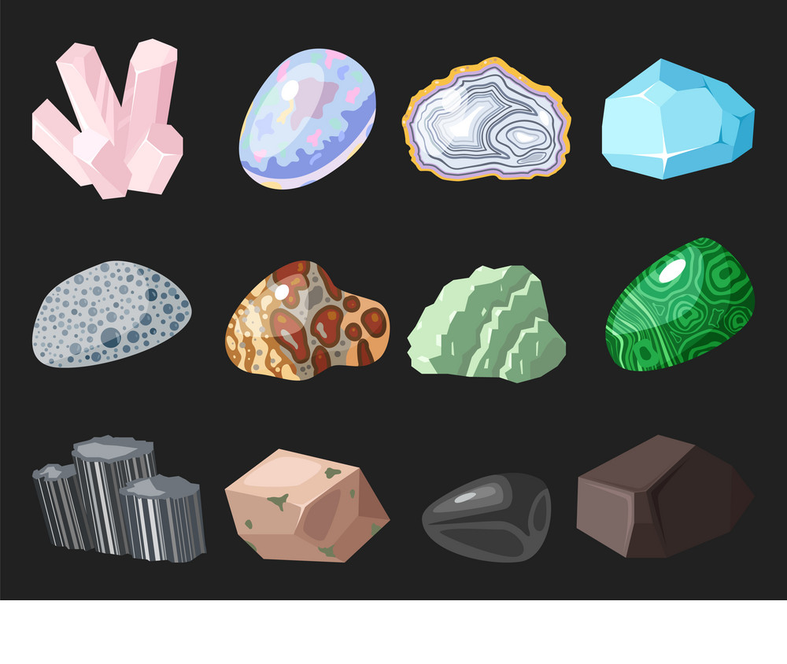

About the Company
 The World of Enchanting Crystals, a new chapter of Divine Visions. Let me introduce you to this beautiful world full of JOY, LOVE and HAPPINESS. Crystal can heal, they can be ur companion, they can fill the void in ur life with Unconditional Love & Joy. So let me welcome you to Dive Into the amazing Ocean of Enchanting Crystals.
About Semi-Precious Stones
The Crystal Kingdom is vast so I thought I would point out the Importance of Crystals. Crystal use dates back to at least 6,000 years ago to many ancient civilizations — the Romans, Egyptians, Greeks, Indian and Japanese. Crystals were used to promote healing, enlightenment, and fulfillment. The crystals can act as a vessel for healing by allowing positive energy to flow into the body, whilst providing a way for negative energy to flow out. Crystals are a part of Mother Earth, connecting, balancing and harmonising. They also connect with all living things not only within but interconnecting with the energy fields around us too. It is also beneficial to place crystals throughout your home, office and in a special space to constantly surround yourself with free flowing positive energy. From the large geodes(Crystal Caves) to the small tumbled stones, each of these crystals and their meanings have a balancing, positive effect on your body and mind. So many people are benefiting from their beauty, positive association, and ability to help us manifest our desires, improve our lives and well being. Also, they are aesthetically beautiful and can fill an empty surface in your home. Pop them on a console, in your office, next to your bed, or on a tray on your dining table.